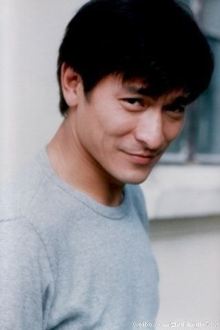

|  | 性别：男 |
| 星座：天秤座 | |
| 出生日期：1961年09月27日 | |
| 出生地：中国香港，新界 | |
| 职业：演员/制片人/配音/导演/其他 | |
| 更多外文名：Lau Tak Wah（本名）/Wah Jai（昵称） | |
| 更多中文名：刘福荣（幼时学名）/华仔（昵称） | |
| 家庭成员：朱丽倩（妻子）/刘向蕙（女） | |
| imdb编号：nm0490489 | |
刘德华，著名演员和歌手。1990年代被封为香港“四大天王”之一，亦是大中华地区极具代表性的艺人之一。 刘德华是个多线发展的艺人：作为歌手，他是吉尼斯世界纪录大全中，获奖最多的香港歌手；电影方面他曾三度夺得香港电影金像奖最佳男主角、以及获得两座台湾金马奖影帝，截止2010年参与出演的电影已经超过140部。
刘德华现在是映艺集团的老板，作为投资人参与制作了多部华语电影。
1999年，刘德华获得“香港十大杰出青年”的荣誉，2000年11月则顺利荣登“世界十大杰出青年”，成为获此殊荣的少数几位香港艺人。2006年7月7日，由于他“是香港最受尊重和喜爱的演艺名人之一，对香港电影及音乐贡献良多。其严谨专业的工作态度，足以成为年轻人的典范”和“以表彰他在表演艺术方面的成就”的原因而被香港演艺学院授予荣誉院士称号，成为获此荣誉的少数几位香港演员之一。
刘德华笃信佛教，法号慧果，热心公益，时常参与慈善活动。2008年，刘德华获香港特别行政区政府委任为太平绅士。2010年4月23日，刘德华获任中国残疾人福利基金会理事并担任副理事长。